Introduction
This is the fifth post in the series Elegant Data Visualization with ggplot2. In the previous post, we learnt about aesthetics. In this post, we will build scatter plots by applying everything we have learnt so far.
Basic Plot
We will continue to use the ecommerce data. You can download it from here or import directly using the readr package.
Let us start by building a simple scatter plot.
ggplot(ecom) +
geom_point(aes(n_pages, duration))
Let us add some random variation to the location of each point to handle overplotting. Use the position argument and set it to jitter.
ggplot(ecom) +
geom_point(aes(n_pages, duration), position = 'jitter')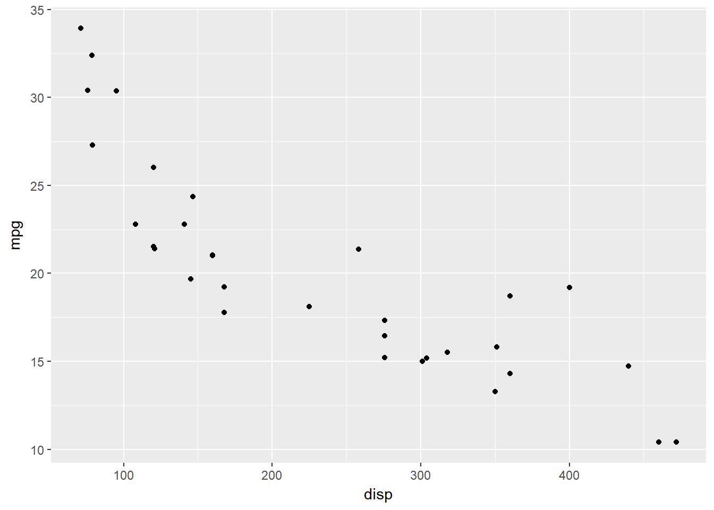
You can use the geom_jitter() function to achieve the above result.
ggplot(ecom) +
geom_jitter(aes(n_pages, duration))Color
Now let us modify the color of the points. There are two ways:
- map color to variable using the
aes()function - specify colors separately
Map color to variables.
- Categorical Variable
ggplot(ecom) +
geom_point(aes(n_pages, duration, color = factor(purchase)),
position = 'jitter')- Continuous Variable
ggplot(ecom) +
geom_point(aes(n_pages, duration, color = order_items),
position = 'jitter')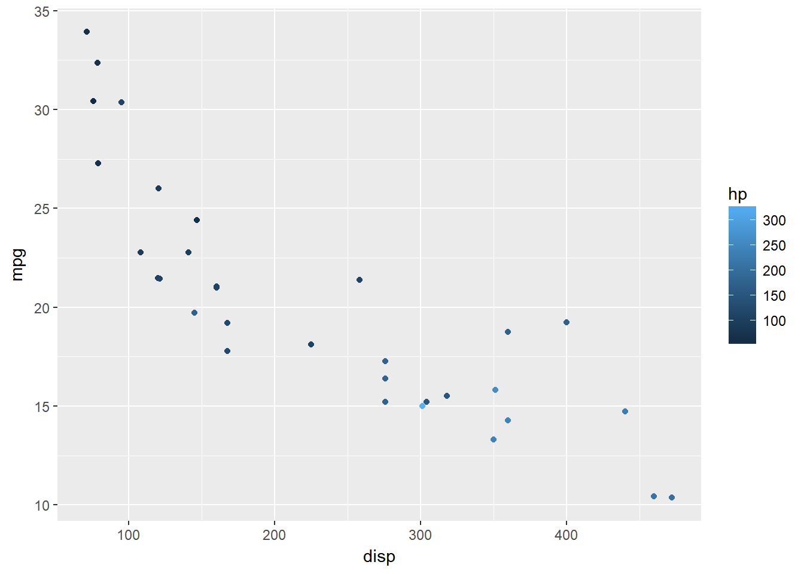
Let us specify the color of the points separately.
ggplot(ecom) +
geom_point(aes(n_pages, duration), color = 'blue',
position = 'jitter')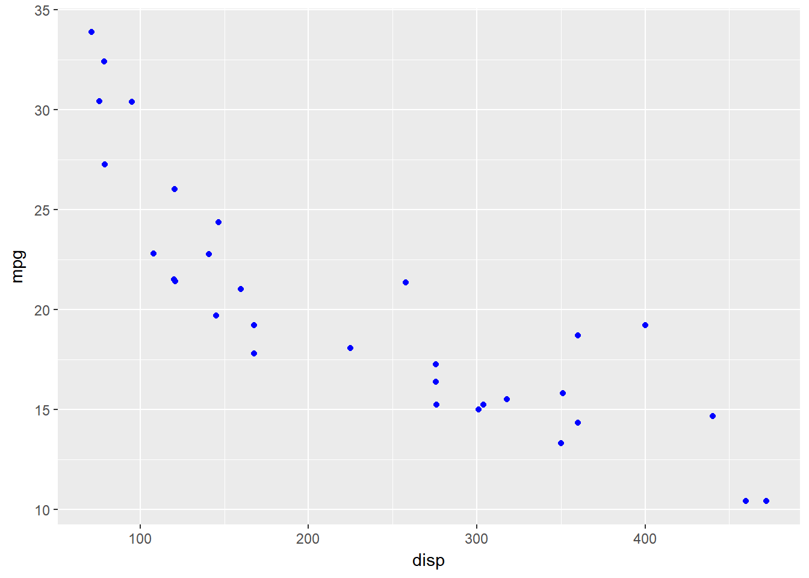
Use alpha argument to specify the transparency of the points.
ggplot(ecom) +
geom_point(aes(n_pages, duration), color = 'blue', alpha = 0.4,
position = 'jitter')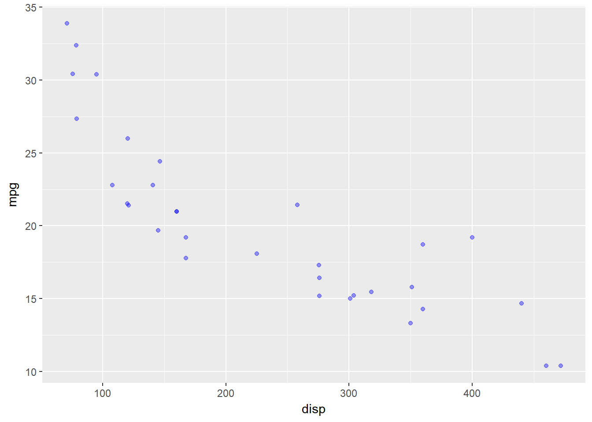
Shape
- Map shape to variable.
We can map shape to a categorical variable only.
ggplot(ecom) +
geom_point(aes(n_pages, duration, shape = factor(device)),
position = 'jitter')Specify value for shape.
ggplot(ecom) +
geom_point(aes(n_pages, duration), shape = 3,
position = 'jitter')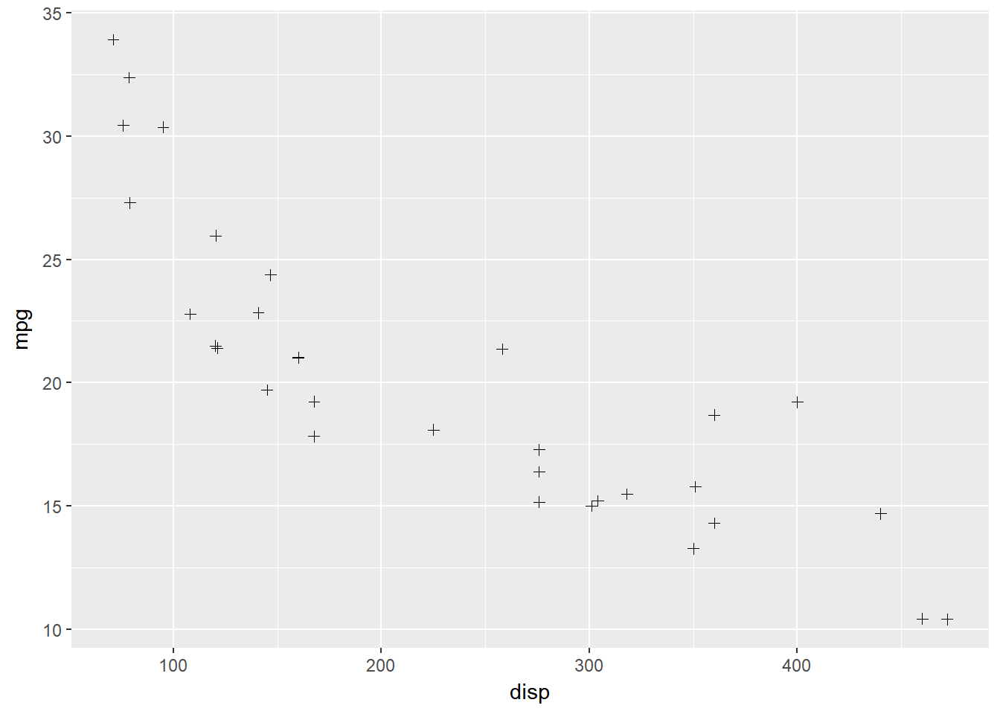
Size
- Map size to variable.
It is advised to map size to a continuous variable.
ggplot(ecom) +
geom_point(aes(n_pages, duration, size = n_visit), color = 'blue',
position = 'jitter')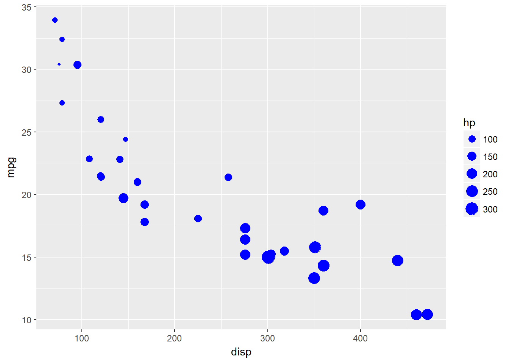
Specify value for shape.
ggplot(ecom) +
geom_point(aes(n_pages, duration), size = 3,
position = 'jitter')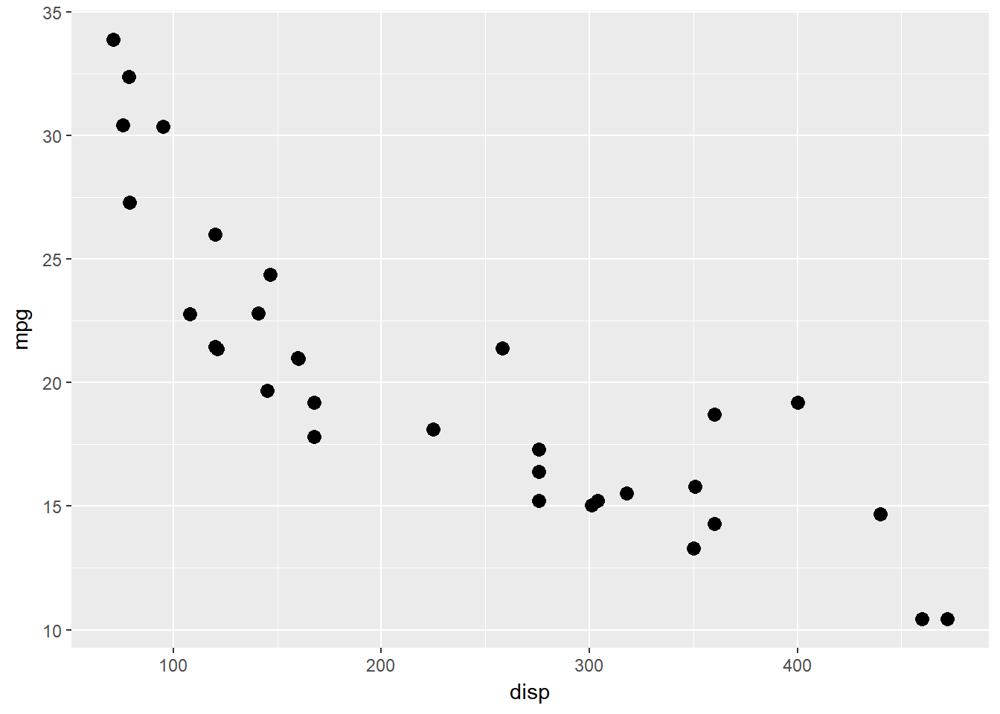
Fit Line
You can fit a line using either geom_abline() or geom_smooth().
Use linear regression.
ggplot(ecom, aes(n_pages, duration)) +
geom_point(position = 'jitter') +
geom_smooth(method = 'lm', se = FALSE)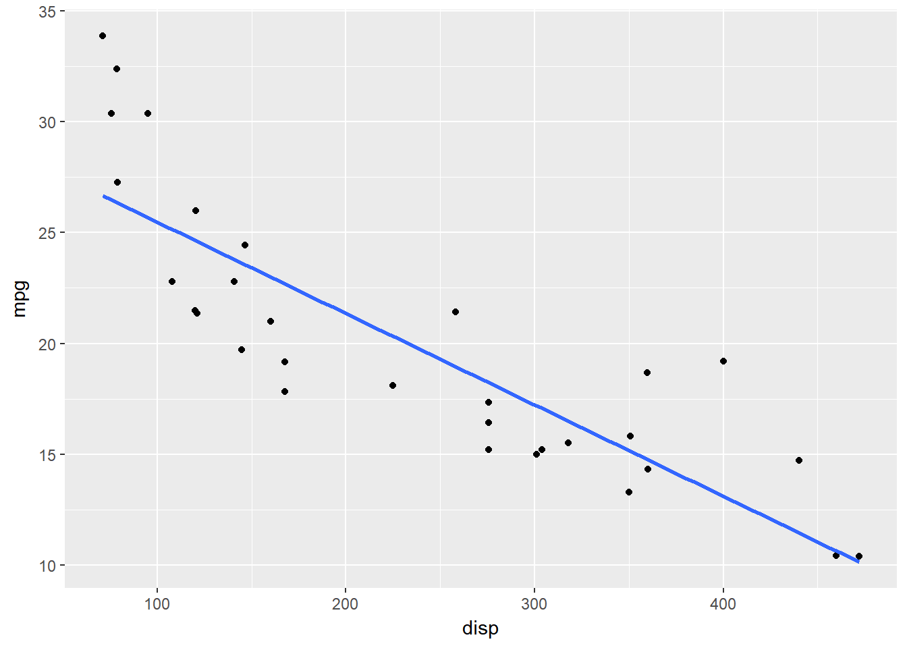
Add a confidence interval for the fitted values.
ggplot(ecom, aes(n_pages, duration)) +
geom_point(position = 'jitter') +
geom_smooth(method = 'lm', se = TRUE)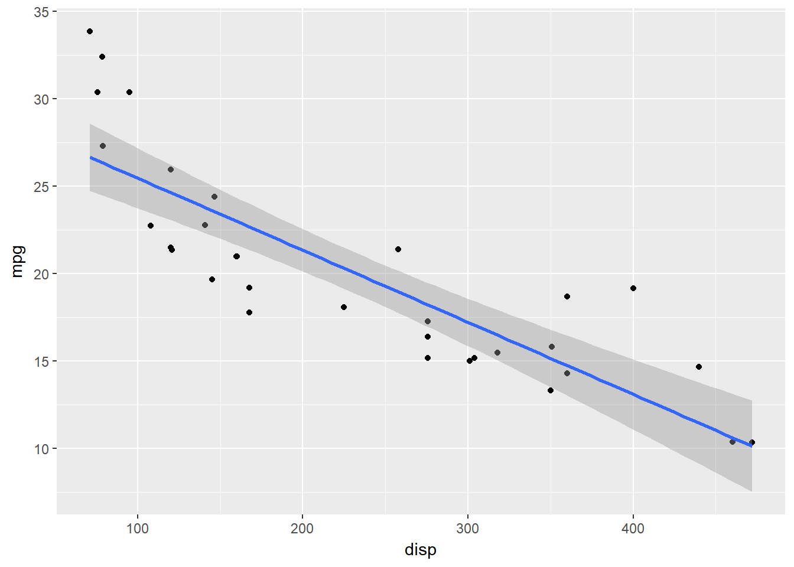
Use loess regression
ggplot(ecom, aes(n_pages, duration)) +
geom_point(position = 'jitter') +
geom_smooth(method = 'loess', se = FALSE)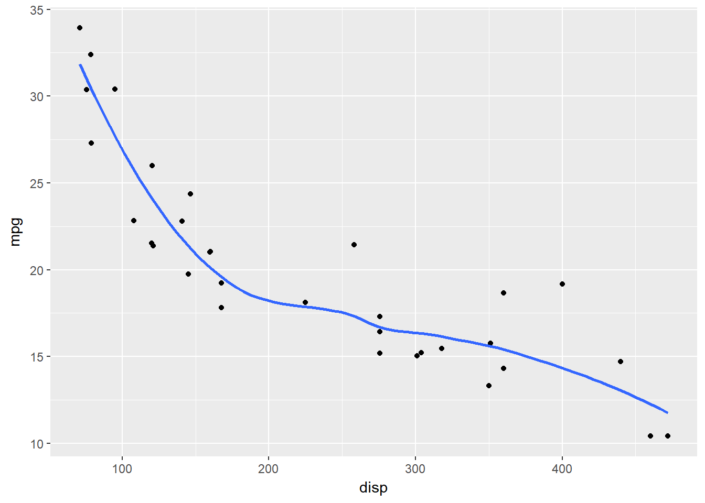
ggplot(ecom, aes(n_pages, duration)) +
geom_point(position = 'jitter') +
geom_smooth(method = 'loess', se = TRUE)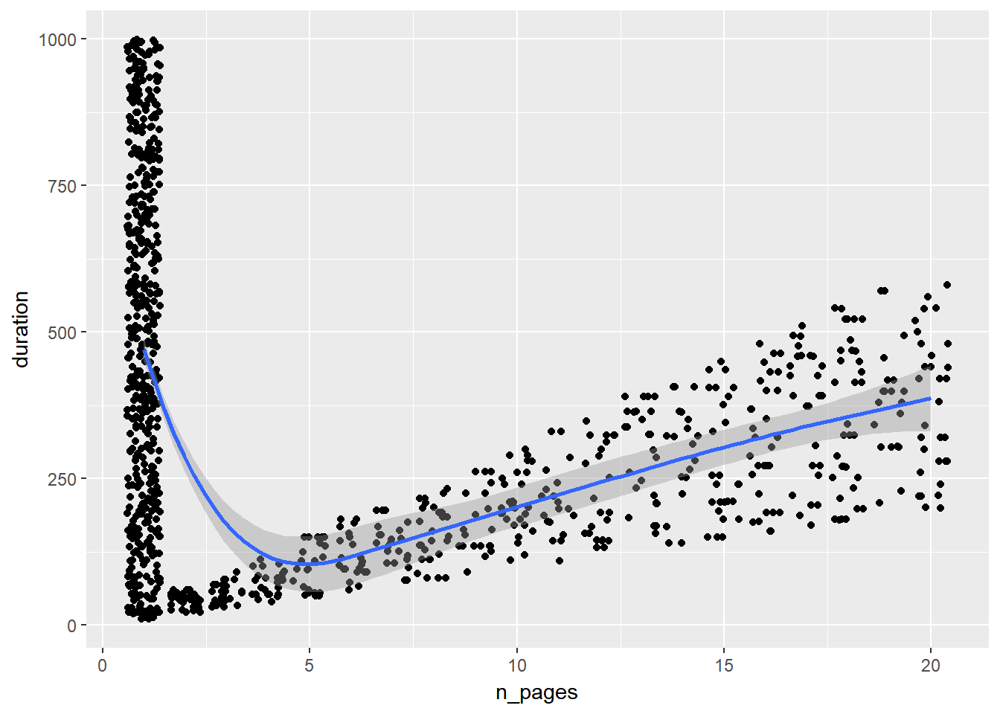
If you use geom_abline(), specify the intercept and the slope. Let us regress duration on n_pages and use the output.
lm(duration ~ n_pages, data = ecom)##
## Call:
## lm(formula = duration ~ n_pages, data = ecom)
##
## Coefficients:
## (Intercept) n_pages
## 404.803 -8.355ggplot(ecom, aes(n_pages, duration)) +
geom_point(position = 'jitter') +
geom_abline(slope = 19.9210, intercept = 0.2199)Summary
In this post, we learnt to:
- build scatter plots
- map aesthetics to variables
- modify axis and legend
- fit regression line
In the next post, we will learn to build line charts.